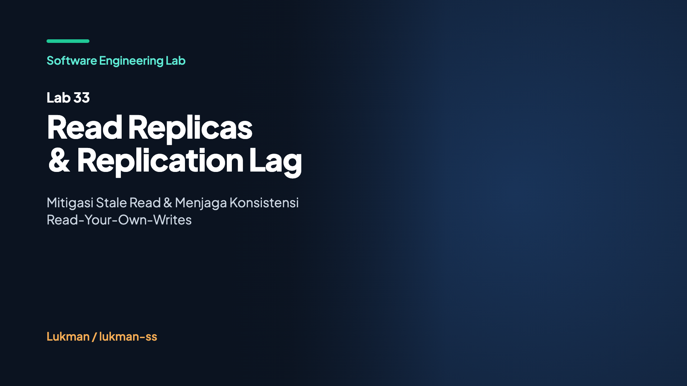

Software Engineering Lab 33 • Karya Lukman / lukman-ss

Dalam arsitektur basis data relasional berskala besar, memisahkan beban baca dan tulis merupakan strategi paling umum untuk meningkatkan throughput sistem. Operasi mutasi data (INSERT, UPDATE, DELETE) dikirimkan secara terpusat ke satu simpul utama yang disebut Primary (atau Master), sedangkan operasi pembacaan (SELECT) disebarkan ke beberapa simpul sekunder yang disebut Read Replicas. Pola pemisahan ini memungkinkan aplikasi menangani ribuan query analitik atau rendering halaman web secara horizontal tanpa membebani kapasitas komputasi mesin primary.
Namun, keuntungan skalabilitas baca tersebut hadir dengan kompromi arsitektural yang mendasar: asinkronitas replikasi data. Hampir semua mesin basis data modern—mulai dari PostgreSQL Streaming Replication, MySQL Binlog Replication, AWS RDS Read Replicas, hingga MongoDB Secondaries—berjalan dalam mode replikasi asinkron (asynchronous replication) secara default. Pada mode ini, primary mengonfirmasi keberhasilan penulisan ke aplikasi seketika setelah data dicatat pada Write-Ahead Log (WAL) lokal. Pengiriman salinan log ke seluruh replika sekunder dan proses penerapannya (apply) ke penyimpanan lokal masing-masing replika dilakukan di latar belakang (background worker).
Jeda waktu fisik antara momen commit di primary dengan momen data selesai diaplikasikan pada replika disebut sebagai Replication Lag. Dalam rentang waktu lag ini, data pada replika sekunder berada dalam kondisi stale (usang). Jika aplikasi secara naif mengarahkan query baca berikutnya ke replika tanpa koordinasi, sebuah anomali serius akan muncul: pengguna yang baru saja memperbarui data pribadinya akan melihat profil lama, atau bahkan menerima pesan error bahwa data tidak ditemukan.
Melalui Software Engineering Lab 33, kita melakukan eksplorasi mendalam mengenai mekanika replication lag, mendemonstrasikan kegagalan pola pemisahan baca-tulis konvensional, dan membangun empat strategi perutean query cerdas menggunakan Go: Time-Based Sticky Routing, Causal Token / Minimum LSN Routing, Lag-Aware Dynamic Routing, dan Synchronous Replication (remote_apply). Seluruh strategi diverifikasi secara deterministik melalui rangkaian pengujian unit otomatis dan eksekusi konkuren bebas data race.
Ketiadaan koordinasi antara penulisan di primary dan pembacaan di replika memicu anomali yang paling sering merusak pengalaman pengguna: pelanggaran terhadap jaminan Read-Your-Own-Writes.
Bayangkan sebuah alur transaksi belanja online yang umum. Seorang pengguna melakukan checkout keranjang belanja dan menekan tombol konfirmasi pembayaran:
POST /checkout ke server.PENDING menjadi COMPLETED dengan nomor urut transaksi (Log Sequence Number / LSN) sebesar 42. Transaksi commit sukses di primary.GET /orders/42 untuk menampilkan rincian pesanan.Replica-2.Replica-2 sedang mengalami antrean jaringan dan baru menerapkan data hingga LSN 40.404 Not Found atau status pesanan masih terbaca PENDING.Pengguna yang panik mengira pembayaran gagal, lalu mengklik tombol bayar untuk kedua kalinya, memicu komplain tagihan ganda ke layanan pelanggan. Masalah ini bukan disebabkan oleh kegagalan sistem penyimpanan atau bug pada query SQL, melainkan ketiadaan mekanisme pelacakan kesegaran data pada lapisan perutean query aplikasi.
Secara formal, replication lag dapat dinyatakan dalam dua dimensi pengukuran:
Replication Lag (LSN) = LSN_primary - AppliedLSN_replica
Replication Lag (Waktu) = Timestamp_commit_primary - Timestamp_apply_replicaSelama selisih LSN_primary - AppliedLSN_replica > 0, replika tersebut berada dalam kondisi usang. Di lingkungan pengembangan lokal, selisih ini sering kali bernilai mendekati nol karena primary dan replika berada di mesin fisik yang sama tanpa latensi jaringan. Inilah yang menjadi titik buta pengembang: kode diuji di lingkungan lokal dan tampak berjalan mulus, namun mengalami kegagalan sporadis ketika diluncurkan ke kluster produksi dengan latensi jaringan lintas-zona dan beban disk I/O tinggi.
Untuk membedah dan memverifikasi fenomena ini secara terkendali tanpa bergantung pada database eksternal yang lambat diatur, Lab 33 mengimplementasikan arsitektur tiga layer mandiri menggunakan pustaka standar Go:
+-------------------------------------------------------------+
| cmd/demo/main.go |
| (Runner Interaktif 4 Skenario Replikasi & Lag) |
+-------------------------------------------------------------+
|
v
+-------------------------------------------------------------+
| internal/router/router.go |
| - Dynamic Query Router & Read/Write Splitting |
| - Session State Tracker (LastWriteTime, LastWriteLSN) |
| - Policy Engine: Sticky, Causal Token, Lag-Aware |
+-------------------------------------------------------------+
|
+-------------+-------------+
| (Writes / | (Reads /
| Primary Reads) | Replica Reads)
v v
+-----------------------------+ +-----------------------------+
| Primary Node (Master) | | Replica Nodes (1..N) |
| - Atomic currentLSN counter | | - Ingest via walChannel |
| - Synchronous / Async Mode | | - Simulated lagDuration |
| - Local Key-Value State | | - Condition Sync (sync.Cond)|
+-----------------------------+ +-----------------------------+
| ^
+------- WAL Stream --------+
(Buffer 1024)Komponen-komponen utama dirancang dengan tanggung jawab modular:
internal/cluster/cluster.go):
Menyediakan abstraksi simpul basis data in-memory. Primary mengelola nomor urut LSN secara atomik menggunakan atomic.Uint64. Setiap replika sekunder berjalan sebagai goroutine independen yang membaca entri Write-Ahead Log dari channel penyangga berukuran 1024. Durasi lag disimulasikan menggunakan jeda waktu terkontrol, dan variabel kondisi sync.Cond digunakan untuk menyiarkan sinyal kesiapan data ke pembaca yang menunggu.internal/router/router.go):
Bertindak sebagai proxy lapisan aplikasi yang membagi query tulis ke primary dan mengevaluasi kebijakan kesegaran sebelum mengarahkan query baca. Router menyimpan riwayat penulisan sesi ke dalam sync.Map yang thread-safe.tests/replication_test.go):
Kumpulan 7 pengujian unit deterministik dan pengujian konkurensi multithreading menggunakan Go Race Detector untuk memastikan integritas data dalam kondisi beban tinggi.Berikut adalah penelusuran implementasi kode dari masing-masing komponen inti di Lab 33.
Di dalam internal/cluster/cluster.go, setiap mutasi dibungkus dalam struktur entri WAL yang memuat LSN monotonik:
type WALEntry struct {
LSN uint64
Key string
Value string
Timestamp time.Time
}
type Node struct {
id string
isPrimary bool
mu sync.RWMutex
data map[string]string
appliedLSN uint64
walChannel chan WALEntry
lagDuration time.Duration
cond *sync.Cond
}Method Write pada Cluster membedakan alur kerja antara mode asinkron dan mode sinkron (setara remote_apply di PostgreSQL):
func (c *Cluster) Write(key, value string) (uint64, error) {
c.mu.RLock()
defer c.mu.RUnlock()
if c.closed {
return 0, ErrClusterClosed
}
lsn := c.currentLSN.Add(1)
entry := WALEntry{
LSN: lsn,
Key: key,
Value: value,
Timestamp: time.Now(),
}
c.primary.mu.Lock()
c.primary.data[key] = value
c.primary.appliedLSN = lsn
c.primary.mu.Unlock()
if c.replMode == SyncReplication {
// Mode Sinkron: Terapkan ke semua replika sebelum commit kembali
for _, replica := range c.replicas {
replica.mu.RLock()
lag := replica.lagDuration
replica.mu.RUnlock()
if lag > 0 {
time.Sleep(lag)
}
replica.mu.Lock()
replica.data[key] = value
replica.appliedLSN = lsn
replica.cond.Broadcast()
replica.mu.Unlock()
}
} else {
// Mode Asinkron: Salurkan ke antrean channel worker di latar belakang
for _, replica := range c.replicas {
select {
case replica.walChannel <- entry:
default:
}
}
}
return lsn, nil
}Worker replika memproses antrean WAL secara asinkron dan membangunkan query pembaca yang terblokir menggunakan sync.Cond:
func (c *Cluster) replicaWorker(replica *Node) {
defer c.wg.Done()
for {
select {
case <-c.ctx.Done():
return
case entry, ok := <-replica.walChannel:
if !ok {
return
}
replica.mu.RLock()
lag := replica.lagDuration
replica.mu.RUnlock()
if lag > 0 {
select {
case <-c.ctx.Done():
return
case <-time.After(lag):
}
}
replica.mu.Lock()
replica.data[entry.Key] = entry.Value
replica.appliedLSN = entry.LSN
replica.cond.Broadcast()
replica.mu.Unlock()
}
}
}Strategi heuristik yang mengarahkan pembacaan sesi ke primary selama durasi StickyDuration sejak penulisan terakhir:
func (r *Router) ReadWithStickySession(sessionID, key string) (string, string, uint64, error) {
if stateVal, ok := r.sessions.Load(sessionID); ok {
state := stateVal.(SessionState)
if time.Since(state.LastWriteTime) < r.config.StickyDuration {
val, lsn, err := r.cluster.Primary().Read(key)
return val, r.cluster.Primary().ID(), lsn, err
}
}
// Setelah masa berlaku sticky habis, alihkan ke routing berbasis lag
return r.ReadLagAware(key)
}Pendekatan deterministik yang memastikan replika yang melayani request telah mencapai posisi LSN tertentu:
func (r *Router) ReadWithToken(ctx context.Context, minLSN uint64, key string) (string, string, uint64, error) {
replicas := r.cluster.Replicas()
// 1. Cari replika yang sudah mencapai target LSN
for _, replica := range replicas {
if replica.AppliedLSN() >= minLSN {
val, lsn, err := replica.Read(key)
return val, replica.ID(), lsn, err
}
}
// 2. Jika belum ada, tunggu replika pertama dengan batas waktu timeout
if len(replicas) > 0 {
targetReplica := replicas[0]
waitCtx, cancel := context.WithTimeout(ctx, r.config.WaitTimeout)
defer cancel()
if err := targetReplica.WaitForLSN(waitCtx, minLSN); err == nil {
val, lsn, err := targetReplica.Read(key)
return val, targetReplica.ID(), lsn, err
}
}
// 3. Fallback ke primary jika replika terlambat melebihi timeout
val, lsn, err := r.cluster.Primary().Read(key)
return val, r.cluster.Primary().ID() + " (fallback)", lsn, err
}Menyaring simpul replika yang melebihi batas toleransi MaxLSNDiff untuk query baca umum:
func (r *Router) ReadLagAware(key string) (string, string, uint64, error) {
replicas := r.cluster.Replicas()
primaryLSN := r.cluster.CurrentLSN()
var eligible []*cluster.Node
for _, replica := range replicas {
appliedLSN := replica.AppliedLSN()
if primaryLSN >= appliedLSN {
diff := primaryLSN - appliedLSN
if diff <= r.config.MaxLSNDiff {
eligible = append(eligible, replica)
}
}
}
if len(eligible) == 0 {
val, lsn, err := r.cluster.Primary().Read(key)
return val, r.cluster.Primary().ID() + " (fallback-lag)", lsn, err
}
idx := r.rrIndex.Add(1) % uint64(len(eligible))
target := eligible[idx]
val, lsn, err := target.Read(key)
return val, target.ID(), lsn, err
}Pengujian dilakukan melalui dua tahapan verifikasi: eksekusi demonstrasi interaktif CLI dan suite pengujian otomatis dengan deteksi data race.
Eksekusi go run ./cmd/demo menghasilkan log empiris pada 4 skenario terpisah:
=== Lab 33: Read Replicas and Replication Lag Demo ===
--- 1. Demonstrating Async Replication Lag Anomaly ---
[Write Primary] Wrote key 'user:profile:123', Primary LSN: 1
[Naive Read] Node: replica-2, Applied LSN: 0, Val: '', Err: key not found
--- 2. Demonstrating Read-Your-Own-Writes with Sticky Session ---
[Sticky Read (within 500ms)] Node: primary, LSN: 1, Val: '{"name":"Alice","tier":"premium"}', Err: <nil>
Sleeping 600ms for sticky duration to expire and replica to catch up...
[Sticky Read (after TTL)] Node: replica-1, LSN: 1, Val: '{"name":"Alice","tier":"premium"}', Err: <nil>
--- 3. Demonstrating Causal Token / LSN Wait ---
[Write Primary] Wrote key 'order:101', LSN: 2
[Token Read (MinLSN=2)] Node: replica-1, LSN: 2, Val: '{"status":"completed"}', Err: <nil>
--- 4. Demonstrating Synchronous Replication (remote_apply) ---
[Sync Write] LSN: 1, Write Duration: 102.199708ms
[Sync Naive Read] Node: replica-2, LSN: 1, Val: '{"name":"Bob"}', Err: <nil>
=== Demo Complete ===Pengujian unit dijalankan dengan perintah go test -v -race ./...:
=== RUN TestNaiveReplicationLag_StaleRead
--- PASS: TestNaiveReplicationLag_StaleRead (0.60s)
=== RUN TestStickySessionRouting
--- PASS: TestStickySessionRouting (0.55s)
=== RUN TestReadWithToken_LSN
--- PASS: TestReadWithToken_LSN (0.20s)
=== RUN TestReplicaLagThreshold_Fallback
--- PASS: TestReplicaLagThreshold_Fallback (0.00s)
=== RUN TestSynchronousReplication_Freshness
--- PASS: TestSynchronousReplication_Freshness (0.10s)
=== RUN TestConcurrentAccess_RaceFree
--- PASS: TestConcurrentAccess_RaceFree (1.10s)
=== RUN TestWaitForLSN_ContextTimeout
--- PASS: TestWaitForLSN_ContextTimeout (0.05s)
PASS
ok labs/33-read-replicas-and-replication-lag/tests 4.046sHasil pengujian membuktikan:
TestNaiveReplicationLag_StaleRead membuktikan secara nyata bahwa kueri naif langsung menghasilkan ErrNotFound sesaat setelah write saat lag replikasi bernilai 500ms.TestStickySessionRouting memvalidasi bahwa dalam rentang 300ms, kueri dialihkan ke primary, dan setelah 550ms kembali diarahkan ke replika secara aman.TestReadWithToken_LSN membuktikan bahwa operasi baca menunggu sekitar 200ms hingga LSN replika mencapai nilai minimum yang disyaratkan.TestReplicaLagThreshold_Fallback memvalidasi isolasi simpul saat lag mencapai 10 detik, memaksa sistem melakukan fallback ke primary (fallback-lag).TestSynchronousReplication_Freshness membuktikan bahwa mode sinkron menjamin pembacaan langsung di replika dengan konsekuensi durasi tulis ~102ms.TestConcurrentAccess_RaceFree memvalidasi 300 operasi konkuren (5 writer + 10 reader paralel) bebas dari perlombaan data memory (data race).TestWaitForLSN_ContextTimeout membuktikan penanganan batas waktu pembatalan context secara bersih tanpa kebocoran memori.Tabel berikut menyajikan komparasi komprehensif antara pendekatan perutean naif konvensional dan strategi perutean cerdas berbasis kesadaran lag:
| Dimensi Arsitektural | Sebelum (Naive Read-Split) | Sesudah (Lag-Aware & Session Routing) |
|---|---|---|
| Konsistensi Post-Write | Eventual Consistency (rawan stale read) | Read-Your-Own-Writes Terjamin |
| Penanganan Lag Replika | Diabaikan (query tetap dikirim) | Terdeteksi via selisih delta LSN |
| Perutean Pasca-Tulis | Acak round-robin ke replika | Sticky ke primary atau tunggu token LSN |
| Ketahanan saat Replika Macet | Rentan gagal atau menyajikan data kedaluwarsa | Fallback otomatis ke primary (graceful degradation) |
| Overhead Koordinasi Klien | Nol (buta konteks) | Ringan (stempel waktu sesi atau token LSN) |
| Beban Simpul Primary | Hanya menangani write | Menangani write + read kritis secara terukur |
| Latensi Operasi Tulis | Sangat cepat (asinkron murni) | Tetap cepat pada async, lambat pada sync mode |
Setiap keputusan arsitektur dalam sistem terdistribusi selalu melibatkan trade-off teknis yang harus dipertimbangkan secara objektif:
Lab ini menggunakan simulasi kluster in-memory berbasis slice dan channel Go. Tidak ada persistensi disk nyata (fsync) atau protokol jaringan TCP fisik. Nilai latensi (lag 200ms, sticky 500ms, write 102ms) adalah angka ilustratif yang dipilih untuk menghasilkan pengujian yang deterministik dan cepat, bukan acuan benchmark lingkungan produksi nyata.
Jendela waktu sticky (misalnya 5 detik) bersifat heuristik murni. Jika jaringan mengalami lonjakan beban sesaat dan replikasi tertinggal hingga 7 detik, pembacaan setelah detik ke-5 tetap berpotensi menyajikan data usang. Sebaliknya, jika replikasi selesai dalam 50 milidetik, menahan pembacaan di primary selama 5 detik akan membuang kapasitas simpul replika secara sia-sia.
Mengambil status LSN fisik ke basis data (seperti menjalankan pg_last_wal_receive_lsn()) pada setiap request akan melipatgandakan round-trip jaringan. Di lingkungan produksi dengan ribuan request per detik, pemeriksaan LSN harus dioptimasi menggunakan background heartbeat cache di memori aplikasi, bukan dieksekusi secara langsung ke basis data.
Gunakan Time-Based Sticky Routing jika:
Gunakan Causal Token / Minimum LSN Routing jika:
Gunakan Synchronous Replication (remote_apply) jika:
Hindari mitigasi kompleks jika:
Seluruh materi dalam artikel ini diverifikasi langsung terhadap implementasi kode sumber pada repositori resmi seri Software Engineering Lab.
cfba3b76824f0ee03b5fa526462d1b72858144e7go test -v -race ./... (Lulus 7/7 kasus uji tanpa data race)